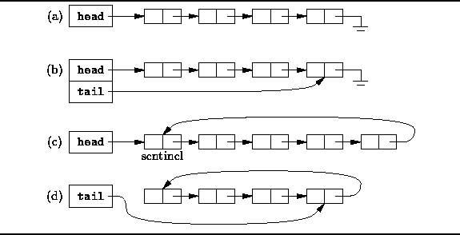
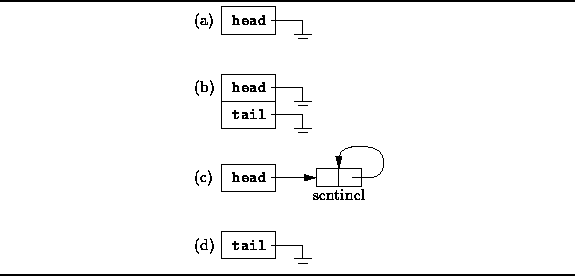

Data Structures and Algorithms
with Object-Oriented Design Patterns in Java
Data Structures and Algorithms
with Object-Oriented Design Patterns in Java
The singly-linked list is the most basic of
all the linked data structures.
A singly-linked list is simply a sequence of dynamically allocated objects,
each of which refers to its successor in the list.
Despite this obvious simplicity,
there are myriad implementation variations.
Figure  shows several of the most common
singly-linked list variants.
shows several of the most common
singly-linked list variants.

Figure: Singly-linked list variations.
The basic singly-linked list is shown in Figure (a).
Each element of the list refers to its successor and
the last element contains the null reference.
One variable,
labeled head in Figure (a),
is used to keep track of the list.
The basic singly-linked list is inefficient in those cases when we wish to add elements to both ends of the list. While it is easy to add elements at the head of the list, to add elements at the other end (the tail ) we need to locate the last element. If the basic basic singly-linked list is used, the entire list needs to be traversed in order to find its tail.
Figure (b) shows
a way in which to make adding elements to the tail of a list more efficient.
The solution uses a second variable, tail ,
which refers to the last element of the list.
Of course, this time efficiency comes at the cost of the additional space
used to store the variable tail.
The singly-linked list labeled (c)
in Figure illustrates two common programming tricks.
There is an extra element at the head of the list
called a sentinel .
This element is never used to hold data
and it is always present.
The principal advantage of using a sentinel is that
it simplifies the programming of certain operations.
For example, since there is always a sentinel standing guard,
we never need to modify the head variable.
Of course, the disadvantage of a sentinel such as that shown in (c)
is that extra space is required,
and the sentinel needs to be created when the list is initialized.
The list (c) is also a circular list . Instead of using a null reference to demarcate the end of the list, the last element of the list refers to the sentinel. The advantage of this programming trick is that insertion at the head of the list, insertion at the tail of the list, and insertion at an arbitrary position of the list are all identical operations.
Of course, it is also possible to make a circular, singly-linked list
that does not use a sentinel.
Figure (d) shows a variation in which
a single variable is used to keep track of the list,
but this time the variable, tail,
refers to the last element of the list.
Since the list is circular in this case,
the first element follows the last element of the list.
Therefore, it is relatively simple to insert both
at the head and at the tail of this list.
This variation minimizes the storage required,
at the expense of a little extra time for certain operations.
Figure illustrates how the empty list
(i.e., the list containing no list elements)
is represented for each of the variations given in Figure .
Notice that the sentinel is always present
in list variant (c).
On the other hand,
in the list variants which do not use a sentinel,
the null reference is used to indicate the empty list.

Figure: Empty singly-linked lists.
In the following sections, we will present the implementation details of a generic singly-linked list. We have chosen to present variation (b)--the one which uses a head and a tail--since is supports append and prepend operations efficiently.
 Copyright © 1998 by Bruno R. Preiss, P.Eng. All rights reserved.
Copyright © 1998 by Bruno R. Preiss, P.Eng. All rights reserved.